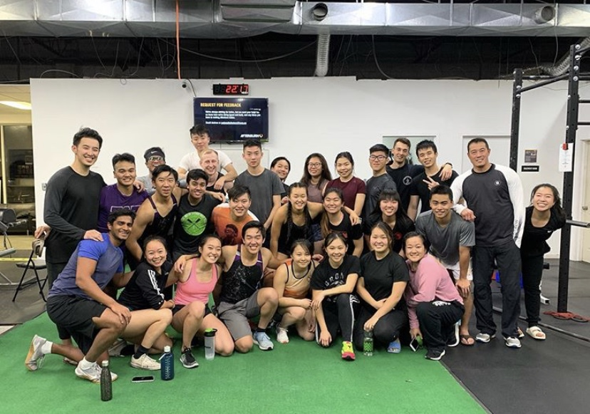
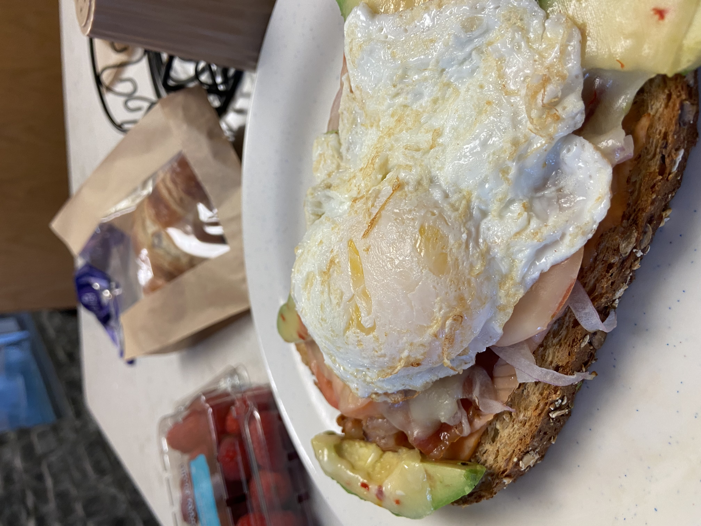
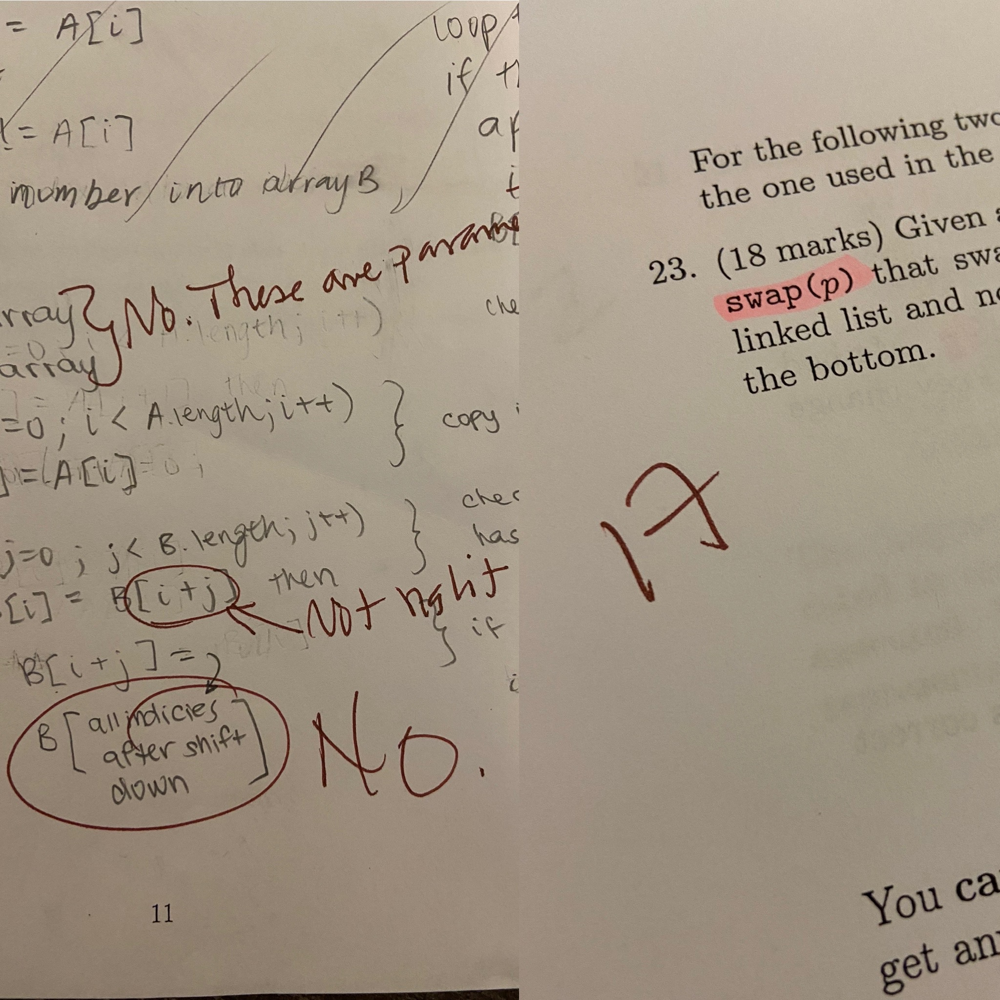

10 Things I Learned
at Western University!
"Though she be little, she is fierce"
As first year comes to a close, I thought I'd share the valuable lessons I learned in university! As someone who struggled severely with finding out where I belong (stemming from the day we had to choose which university to go to), I've gone through quite a few emotional challenges that allowed me to see world in a new light.
- Rid Any Expectations
- Live Your Fullest Life, Filling It With Kindness, Happiness, and Genuine Interactions
- Surround Yourself With Support
- Pick 2: Social Life. Healthy Sleep Schedule. Academics.
- Don't Be Fooled By the Cafeteria Food (still eat healthy, please)
- Be Proud of Yourself For The Little Things
- Know Yourself & Your Worth
- Find Your Groove, Everyone's got Their Own!
- Head Up High and Don't Look Back
- Do What You Love & Love What You Do
To have expectations is to be disappointed when these expectations are not met. A wise English teacher of mine once reiterated the fact that you can't be disappointed if you aren't expecting something in the first place. It's definitely one thing to set reasonable goals that can be attainable in the future, or better yet, have a change in mindsets to soar for newfound goals. The one thing that will always be variable is how you live your life and it's great to branch away from a fixed mindset to continue to grow!
Another wise teacher of mine had once started his class with the phrase "I'm allergic to fake" and this has been the motto I've lived by ever since. Of course, all first interactions include that of rainbows and butterflies, however, if all conversations were set around a dystopia, I would be living as an oppressed character in The Giver. People around you want to get to know what you value, what humour you have and ultimately, who YOU are. Be genuine with yourself and everyone around you. I realized the importance of this when someone I met for the first time mentioned "everyone says you're super sweet and I really wanted to meet you" because at the end of the day, nothing can ever go wrong from being kind. And hey, I think it's so much more of a complement to be known as someone who was kind than the first year that got a huge summer internship.
This is so, so, so important! You have no idea how many times I broke down in my room, but luckily I had 3 roommates who constantly gave me love and care, cheered me up with memes and listened. A Susan who picks up my stuffed animals and makes peoples beds just because they had a "rough day", microwaves me fried rice and comes by my room, even when the door's closed just to say hello. A Sheena who gives me deep talks and books that encourage me to trust the online dating process? And such fun energy to the point where I walk in to see 7 honey mustards taped to the wall along with a cactus on a chopstick. A Jess who loves and cares for me every night just by calling me Janny, buys me stress toys when I'm having a rough week, decorates the room with Gibbys and Drakes, and asks if I want tea when I'm in need of some comfort. Y'all really need to find a group of people that will 100% be there for you and make ramen with you when you crave the curly noodles the most.
Said no Western student ever… If you haven't heard, it's true. Western has a great party life and social scene. The very first week for first year's is known as Orientation Week or O-Week, a fun filled week of activities designed for you to make friends and get to know people who live in your residence and faculty. Take advantage of this week because it really is one of the best weeks of your university life. However, I still thought that despite getting close to my suitemates, I felt as though I still haven't met the friends that I would spend all-nighters with. I remember being so sad because all my older friends had said that their friends now are the people they met during this infamous O-week.  There truly is a magical setting at university, in that everywhere you go, there are friends to be made. I found this was true when I joined clubs like Dragon Boat that focus on a strong sense of family and community. After all, there were 4 practices/week so if you didn't have a class with a teammate, you would see them sitting on a pool ledge, lifting at the gym or running around the ice rink. This is where I was able to be myself, word hard and have fun at the same time. There were so many upper year students who were willing to talk to me about anything, from how bad my shin splints were acting up to showing each other the fun Tik Tok dances we had filmed. Clubs like these really take care of you by encouraging healthy practices and stimulating a social scene whether it be at the ice rink, a fun movie night or even a beer pong tournament. But in all seriousness, make sure to go to bed early if you know you won't be able to focus in the morning. Nothing sucks more than almost falling asleep in a 9:30 while the prof is going over exam material. During my first semester, I planned to have 9:30 classes and had no idea why I had done this because I slept late and could never wake up. The funniest thing was when me and my roommate would have the same alarm and intention to go to class, but after both of us turned off our 8:00 alarm, we slowly drifted back to sleep until 11AM. This early schedule only encouraged me to skip classes and gave me horrible work ethic because I could never keep focused. My second semester was A LOT better because my days started at 12:30 the earliest and ended around 3:30-5:30. This gave me the chance to catch up on my sleep, use my time wisely and I went to every class (except for 1033, ops). So if you're wondering if you can have all 3, you definitely can. It just takes a lot of getting into routine and finding out what works for you, not anyone else.
 Freshman 15 is REAL… and it hits you all at once to the point where there is no return. I'm not sure if this is because I lived on the cafeteria floor (definitely played a role) but I found myself eating so much I didn't need to, which was ironic because I had a lot of meal plan left compared to my friends. Take advantage of the recreation centre because you do pay for this! Western offers a lot of free classes like cycling, zumba and pilates so grab a friend and sweat that Tiramisu cake off ;) Nonetheless, don't let the snack bar be the woman as a temptress in your hero's journey.
I came into university with literally no computer science knowledge and I took on this feat to challenge my brain and see what I was capable of. Don't get me wrong, it was hard. I had a completely science background and the only errors I knew about were procedural and experimental, not compilation and runtime. It was especially difficult studying in a male dominated industry where there's a lot of underrepresentation with regards to female empowerment. However, just know that there are other people who are going through the same challenges as you! Find your fellow females to give you that kick of motivation when you need it the most, debugging a final exam that somehow included binary trees, circular arrays, linked lists, sorting, and recursion all in one question. I know, brutal.  Don't get me wrong this subject is beautiful with all the twists and turns it can bring you to. I went to 3 hackathons this year and learned so much about both front-end and back-end work. Super great opportunity for learning about tech, and make sure to capitalize on the workshops and mentors around you! However, I was still SO SO SO scared of my CS Midterm and I had so much built up anxiety for other reasons and slept at 3:30 AM the night before. I legit did not think I would pass, and while I was writing it, I had no clue what I had just written. I was even lying in bed one day and thinking about how I had gotten the whole 18 mark question wrong, the 8 mark one, the 7 mark one, the other 8 mark one… wait a minute that's already less than a pass. Low and behold, I got my exam back and passed, even for a question I had no clue how to do, I got full marks which really shocked me because clearly I knew how to do it unconsciously. If there's one thing I want to pass down, don't ever doubt yourself. If you can believe it, you can achieve it. Don't get me wrong, I didn't do well on the exam but for a subject I just started learning, I'm pretty damn proud of myself.
During first semester, I didn't get into the routine of university, I was sleeping at 3AM, and waking for my 9:30s where I was so tired I couldn't pay attention. I then found myself taking naps in the middle of the day where I wasn't able to fall asleep and just wasting my time being unproductive. My second semester schedule had an earliest class of 12:30, where I happily slept at 1 and woke up at 10 to do some work. I found this so much more productive because I would be focused in class and wouldn't be trying to fall asleep every time the prof inhaled for a breath of air. If you work best as a morning person then so be it, plan your classes according to what your body tells you, not what anyone else says. Know your worth and stand up for what's right. I learned this from a friend of mine (love you Ann) who constantly asked me "why did you let people treat you like that?" It was a hard pillow to swallow but it was true. Everyone is stressed at some point and maybe your friend isn't being as supportive as usual, but I really do appreciate those who call me out on it so that I am aware of it in the future. As she says, "it doesn't have to be beefy" so have a conversation with them about it!
The first few weeks of university are ROUGH. There is so much going on, from the raging social events Orientation Week has in store for you, to the first day of classes. Be prepared because there is so much content to absorb and so many distractions around you. For someone who procrastinated almost everything in high school, I quickly discovered that this was not the correct way to approach studying in university unless you wanted to spend endless hours cramming information the night before the exam. For the first time I was sleeping at 3AM for no reason and hopelessly trying to get through all the MyEconLab questions to be prepared for a quiz worth 2.5%. But trust me, once you find your groove and discover how to balance how much time to spend eating with friends in the cafeteria, an appropriate bedtime and how much to prepare for lectures, it gets easier I promise. Anyways, back to find YOUR groove. This is so important because what works for someone else might not work for you and vice versa. Many of my medical science friends had early classes and used most of their downtime studying at the library. What I was naïve about was thinking that I was falling behind because I didn't mimic their every move. But what I failed to consider was how first of all I was in a different program and that I study a lot better when I do work in long chunks rather than hour by hour sessions. Don't feel like you're missing out just because you aren't doing what others are doing, go with your own pace and know what works for you!
Another really difficult thing that I tell myself all the time but often, finding myself falling in the trap of the horrendous "what if" thoughts. It's easy to look back into the past and imagine what it would have been like if you chose the other path of the fork in the road. When we make mistakes on social media, it's as easy as a ctrl z or clicking delete, but will there ever be a point where time travel will exist? Of course, it's great to learn from your mistakes to continue climbing up your ladder of success, but dwelling in the past will do nothing in your favour. My mom always tells me this even though I'm not really religious, god is looking out and has a plan for everyone, so if you don't necessarily get one thing you've always wanted, when one door closes, another window opens.
Definitely the one quote I live by every, single day. There are so many parts of growing up and every year, new challenges arise that you grow into perceiving as the norm. Use the free time you have to do something you enjoy because this time decreases exponentially as you grow older. For me, I discovered the sport of dragon boat in grade 10 and it has been my stress relieving platform that I have weaved into my lifestyle. To me, this sport gives me so much room to grow and be better for both myself and my entire team. Although workouts are challenging and 2K races suck the soul out of your body, I lose all sight of time when working towards these goals because the ambition I exhibit when successful compares to the exhilaration of solving a challenging math problem that others have. When you discover what fuels your passion, you'll stop giving yourself excuses and there really is no stopping you! After my first dragon boat regatta, I immediately knew, that if I had given up on the first day, I would not be physically stronger today, nor would I have felt that very adrenaline that pushes me to work my hardest — not only in dragon boat, but also in my future endeavours.
Yours Truly, Janice Xu